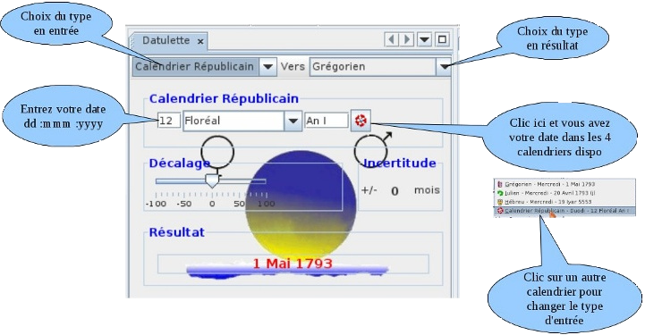
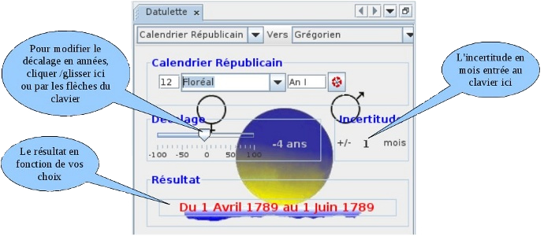
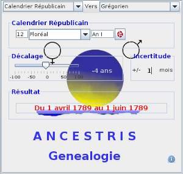
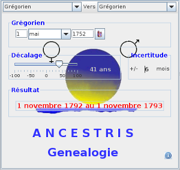
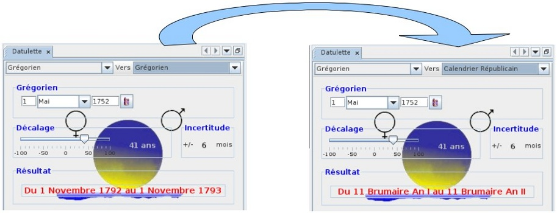

| Les fonctions disponibles |
|  |
|  |
| Comment ça marche? |
|

1 - Nous trouvons dans nos relevés un individu décédé le 12 Floréal An I à l'age de 4 ans et nous cherchons sa date de naissance.
En positionnant le curseur de décalage sur "-4"nous aurons sa date de naissance. Notre individu pouvant être né en début ou fin de mois et les relevés pas toujours précis, nous introduirons une incertitude de "±1" mois. Notre individu serait donc né entre le 1 avril 1789 et le 1 juin 1789. Attention dans ce cas si vous demandez la sortie en calendrier républicain (du 22 septembre 1792 au 31 décembre 1805), la réponse vous sera donnée en calendrier grégorien. |
|

2 - Nous trouvons dans nos relevés un mariage en date du 1 mai 1752 et nous savons que la mariée est décédée à l'age de 41 ans.
Nous positionnerons donc le curseur de décalage sur "+41". Notre mariée pouvant être née en début ou fin d'année et les relevés pas toujours précis nous introduirons une incertitude de "±6 mois". Notre mariée serait donc décédée entre le 1 novembre 1792 et le 1 novembre 1793, cette date étant dans la plage du calendrier républicain on peut facilement la convertir. |
|

D'autres combinaisons sont possibles ce ne sont que deux exemples, l'incertitude peut être réglée selon votre expérience des aléas des relevés.
|
|
Petit rappel sur les calendriers (merci à Wikipedia) |
|
|